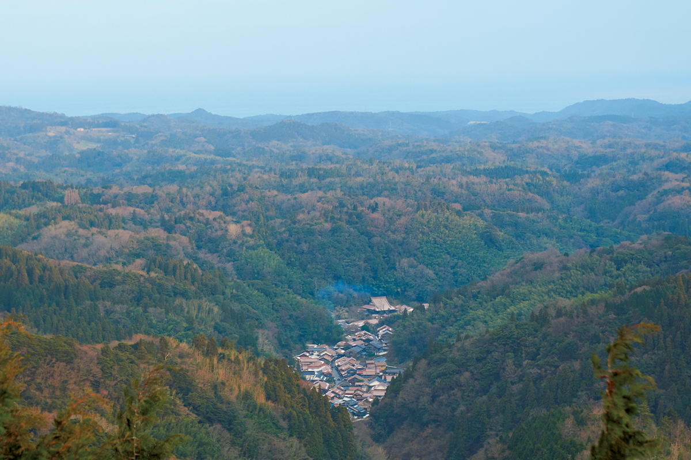
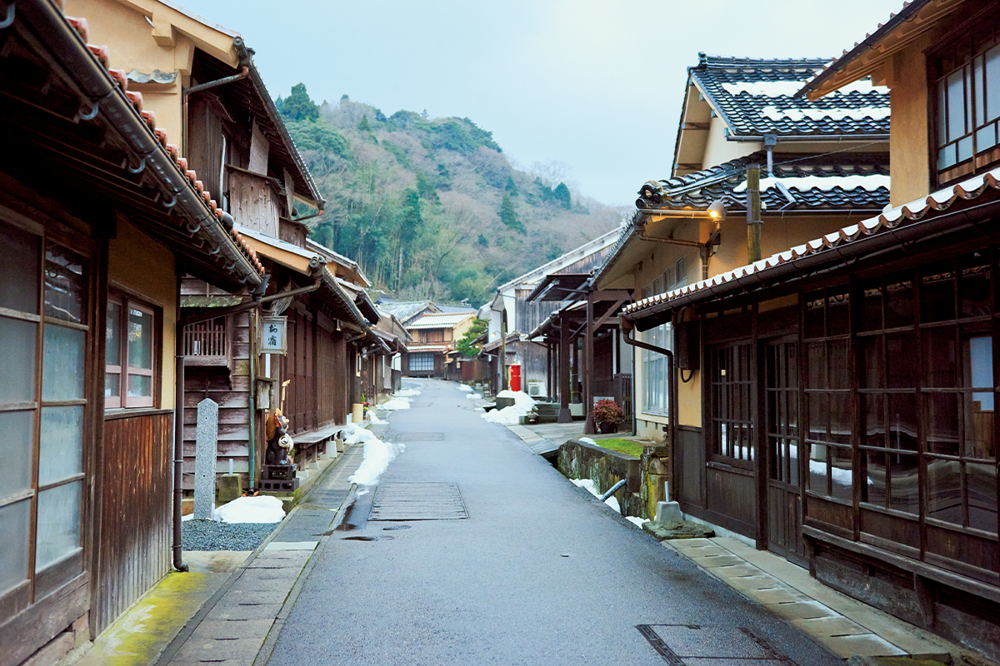
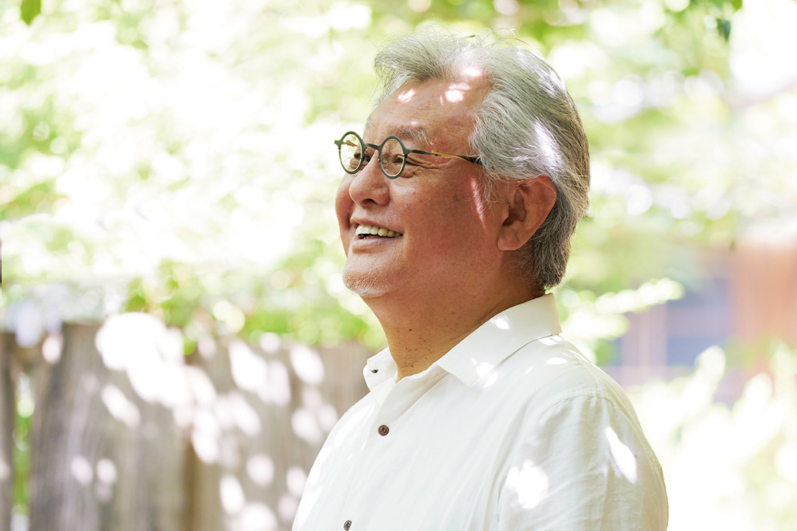
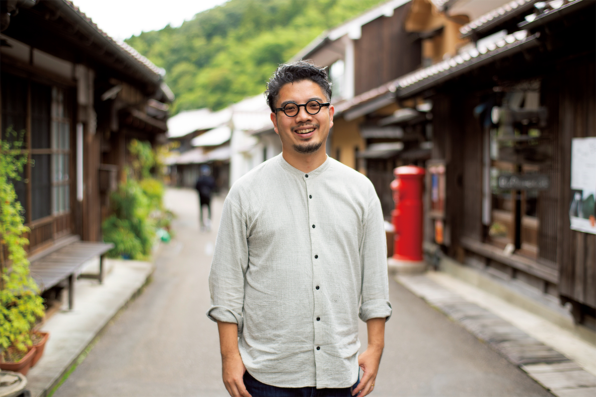
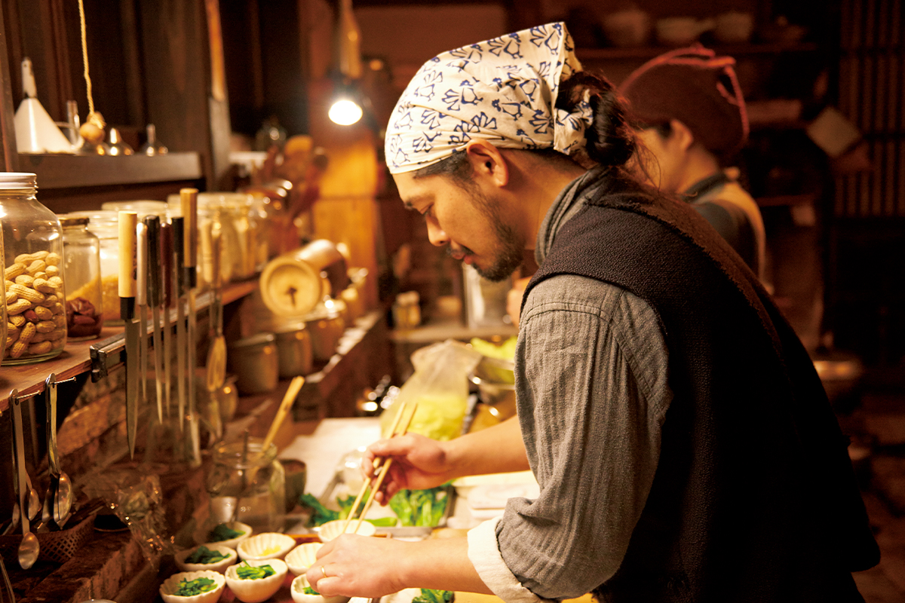
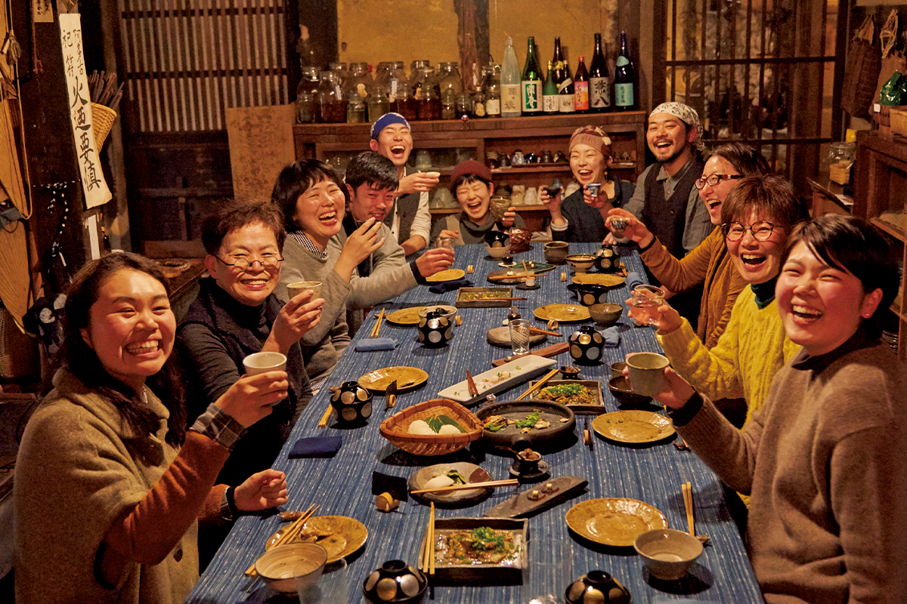
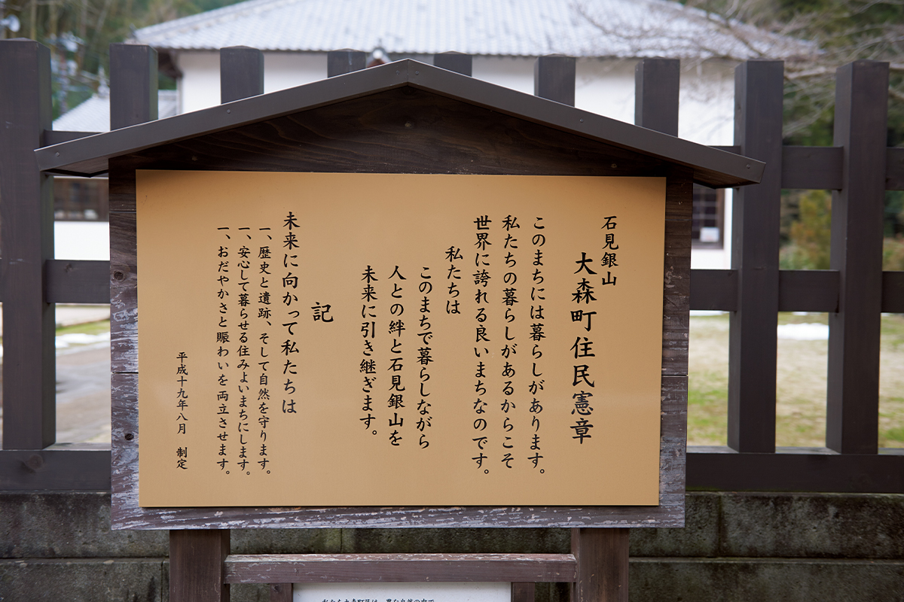
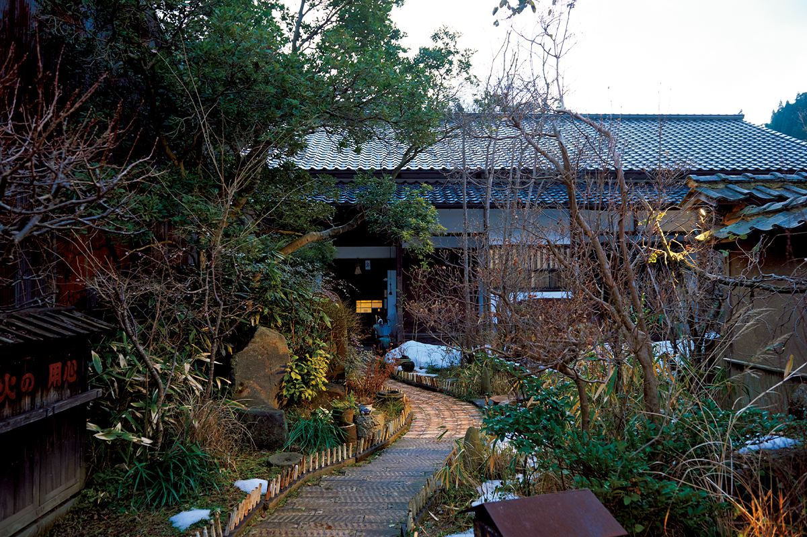

Префектура Симанэ · Ода, Омори · город и люди
Омори у рудника Ивами Гиндзан: город, где главная достопримечательность это жизнь

Омори, крошечный город у серебряного рудника Ивами Гиндзан, давно решил, что не станет декорацией для туристов. Здесь показывают не только объект всемирного наследия, но и саму жизнь: старую улицу, дом, где ужинают вместе с хозяевами, и правила, которые жители написали для себя и для гостей.
Город
Омори: серебро, река и 400 жителей
Омори входит в город Ода и стоит в горах центральной части префектуры Симанэ. Здесь живёт около 400 человек. Над городом поднимаются выработки рудника Ивами Гиндзан: в 2007 году его внесли в список всемирного наследия ЮНЕСКО, и он стал четырнадцатым японским объектом в этом списке.

Когда рудник закрыли, молодёжь начала уезжать, и Омори быстро старел. Железнодорожной станции здесь нет, автобусы ходят всего несколько раз в день. Мало кто верил, что в такое место можно позвать гостей. Но именно то, на что местные давно перестали смотреть, старые дома, природа вокруг и деревенская сметка в быту, стало главной причиной сюда приехать.
Хозяева
Семья Мацуба и «Гунгэндо»


Дайкити Мацуба вернулся в родной город с женой Томи больше чем за двадцать лет до того, как рудник получил статус всемирного наследия. Супруги сами жили так, как привыкли жить здесь, а природу Омори сделали источником идей. Так появился «Гунгэндо», марка одежды и вещей для дома, в которых старое японское ремесло соединено с сегодняшним бытом. Сегодня её знают по всей Японии.
«Ещё раз посмотреть на сокровище у себя под ногами. Пандемия дала нам важное понимание и время подумать»
Дайкити Мацуба
Главный магазин «Гунгэндо» занимает купеческий дом, которому около 170 лет: долгое время в нём никто не жил, и семья его восстановила. На главной улице Омори на участке около 1000 квадратных метров собраны магазин, галерея и кафе. Всё, что делает семья, держится на принципе «фукко сосин»: не просто возрождать старое, а обновлять его вместе со временем, чтобы получилось что-то новое.
Ночлег
«Такё Абэкэ»: как вернуться в деревню на каникулы
Самый известный проект семьи стоит в бывшей самурайской усадьбе. Гостиницу «Такё Абэкэ» Томи Мацуба собирала тринадцать лет из старых материалов, которые находила в разных местах, и сделала из неё дом своей мечты. Принимают здесь только две группы гостей в день.

Атмосфера такая, будто приехал летом к бабушке и с порога сказал: «Я дома». Главная особенность гостиницы в ужине: хозяева и гости садятся за один стол. За ним уже побывали около 10 000 человек из Японии и других стран. Ночь с ужином и завтраком стоила 39 600 иен в 2022 году.

«Такё Абэкэ»
- Адрес
- префектура Симанэ, Ода, Омори-тё, Ха 159-1
- Телефон
- +81 854-89-0022
- Цены / Вход
- 39 600 иен за ночь с ужином и завтраком
- Сайт
- kurasuyado.jp
Правила
Устав жителей Омори
Многие думают, что статус всемирного наследия сам по себе оживил туризм. Дайкити Мацуба вспоминает те годы иначе.
«Слова "всемирное наследие" притягивают очень сильно. Любители истории ещё ладно, но приезжали и те, кто сам не понимал, что хочет здесь увидеть и почувствовать. Когда людей слишком много, ты уже не можешь рассказать им то, что хочешь. Нам этого не хотелось»
Дайкити Мацуба
Бум действительно прошёл за несколько лет. А через месяц после того, как рудник вошёл в список ЮНЕСКО, жители приняли «Устав жителей Омори». В нём сказано, что рудник важен для истории и культуры города, но так же важна и жизнь, которую здесь строили веками. Цель в том, чтобы спокойный быт и наплыв гостей не мешали друг другу.

«В этом городе есть жизнь. Именно потому, что здесь живём мы, это хороший город, которым можно гордиться перед всем миром. Мы живём в этом городе и передадим будущему и связи между людьми, и рудник Ивами Гиндзан»
Устав жителей Омори
Гостям
Как приезжать в Омори
В 2019 году Тадаси Мацуба основал в группе туристическую компанию: те, кто держал город на себе, становились старше, и он боялся, что скоро гостей будет некому принимать. Через год пришла пандемия. Тогда жители вместе стали учиться, создали общий консорциум и начали испытывать единый билет для разных мест и транспорта Омори.

Из бесед с отцом и сыном Мацуба складываются простые советы для тех, кто собирается сюда.
Планируйте сами. По словам Дайкити, в период Эдо паломники, отправляясь в путь по 88 храмам острова Сикоку, сами собирали сведения о дороге. Потом удобство победило, и главное отдали на откуп агентствам. А ведь радость поездки в том, чтобы узнавать, удивляться и находить новых знакомых.
Оставьте время про запас. Тадаси помнит, как впервые приехал в Омори с будущей женой и подумал: «Неужели такое место существует». Город невелик, и, по его словам, здесь важен «запас»: свободное время, в которое каждый сам решает, чем заняться.
Говорите о своих желаниях. Гостю не стоит молча принимать всё, что приготовлено. Если что-то не едите, скажите об этом. Хлопот прибавится обеим сторонам, но так поездка становится ценнее. «Чем больше эффективности, тем дальше от впечатлений», говорит Дайкити.
Смотрите на жизнь, а не только на наследие. Слово «быт» в уставе Омори встречается три раза, и поэтому компания Тадаси называется институтом «бытового туризма». Ценность города, считает он, в повседневной жизни, а понять её можно, только прикоснувшись к ней.
Платите за настоящее. Высокая цена не обязательно означает роскошь с дорогим интерьером. Сокровищам, которые жители долго берегли, нужна честная цена, а гостю нужно уважать их ценность.
«Чем сильнее каждый думает только о своём росте, тем быстрее приходит в упадок весь край. Держаться за руки, ставя на первое место человека. Думаю, в этом и есть ответ, как сохранить туризм в нашем краю»
Дайкити Мацуба
Фото: Акико Номияма.